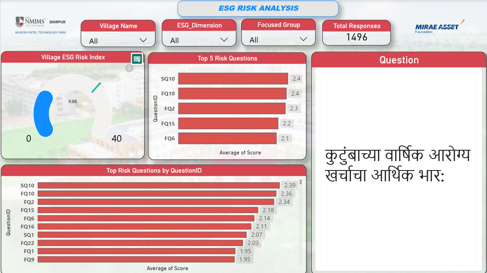
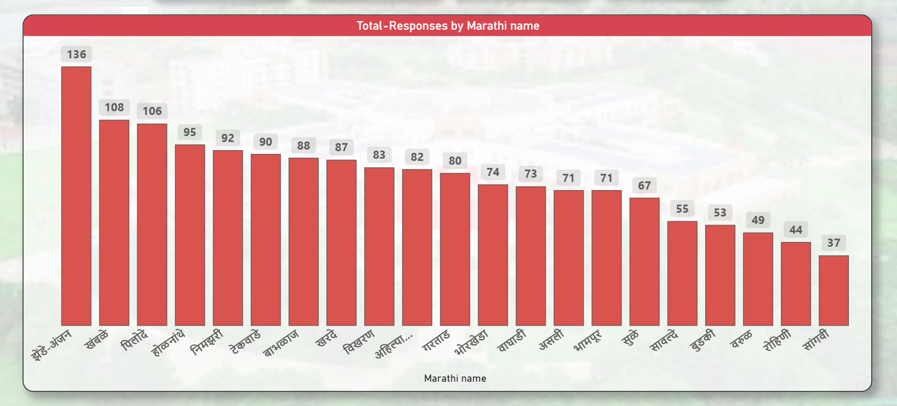

BUSINESS INTELLIGENCE
ESG risk analysis dashboard
A Power BI dashboard exploring 1,496 survey responses through village-level ESG risks, focus-group comparisons, and question-level insights.
DASHBOARD SHOWCASE
From survey responses to risk insights.
Three views from the Power BI dashboard. Select any screenshot to open the full-size image. These are static previews; filters are shown as captured.

ESG risk overview
The All-filter view summarizes 1,496 responses and an overall risk index of 9.88 (Low Risk), alongside village rankings, ESG dimension scores, and five focus groups.
View full-size screenshot ↗
Question-level analysis
The top-five and extended question rankings highlight higher-scoring survey items. The selected Marathi question concerns the financial burden of annual household healthcare expenses.
View full-size screenshot ↗
Survey coverage by village
Village-wise response counts show uneven survey participation, ranging from 37 to 136 in this captured chart. Marathi village labels keep the view connected to the local survey context.
View full-size screenshot ↗01 / MOTIVATION
Why this problem?
Village-level survey findings can be difficult to interpret when environmental, social, and governance concerns are spread across locations, respondent groups, and individual questions. A shared dashboard brings these perspectives together to support closer investigation.
02 / THE NEED
What needed to be addressed.
Connect an overall ESG risk summary with village comparisons, the three ESG dimensions, and the questions behind higher scores. Response counts also need to remain visible so viewers can understand how survey participation varies across villages.
03 / THE SOLUTION
How it was approached.
- Built a Power BI overview combining the Village ESG Risk Index, village rankings, environmental/social/governance scores, and comparisons across farmers, students, health workers, homemakers, and teachers.
- Added filters for village, ESG dimension, and focus group, alongside a total-response indicator, to support focused exploration of the survey results.
- Created question-level views with top-risk rankings and selected question text in Marathi, plus a village-wise response-count chart to show survey coverage.
04 / OUTCOME & CONTEXT
1,496 survey responses
The captured All-filter overview displays a Village ESG Risk Index of 9.88, labeled Low Risk. The ESG dimension chart shows Environmental 11.6, Social 9.7, and Governance 8.4.
Interpreting the work
These values describe the supplied dashboard screenshots and their captured filter state. The Low Risk label and dimension scores follow the dashboard’s own scoring; the underlying survey data and scoring methodology are not provided here for independent validation. The screenshots demonstrate the interface and analysis views, not measured social or environmental impact.
Source: Supplied ESG dashboard screenshots. Motivation and need describe the problem framing.